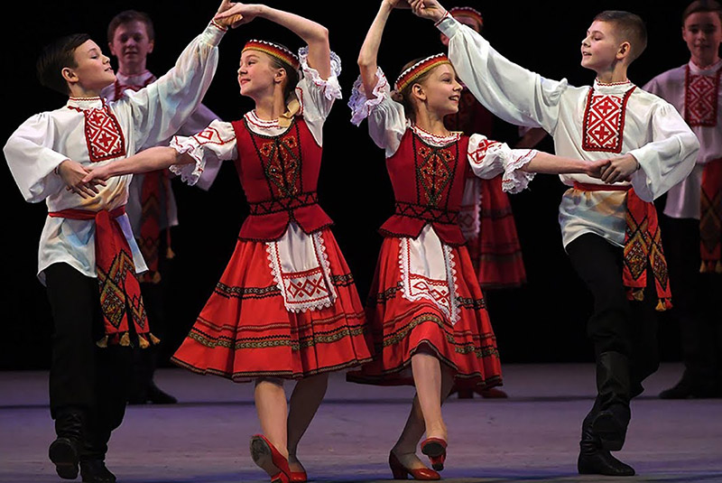

КУЛЬТУРА
Культура
Самобытная художественная культура Беларуси формировалась на протяжении столетий. Веками из поколения в поколение передавались богатейшие духовные ценности, прославляющие нравственную сущность человека. В них - высокие идеалы добра и справедливости, уважения к окружающим, решительного неприятия зла и насилия. На протяжении всей истории нашу страну прославляли и продолжают прославлять оригинальные архитектурные и художественные школы, неповторимые произведения музыки и литературы.
Основные направления государственной политики в данной сфере предусмотрены Кодексом Республики Беларусь о культуре. В этом документе установлены правовые, организационные, экономические и социальные основы культурной деятельности, регулируются правоотношения в области сохранения и развития культурных ценностей, охраны историко-культурного и археологического наследия; библиотечного и музейного дела; кинематографа; народного художественного ремесла, коллективов художественной самодеятельности; организации культурных мероприятий и отдыха населения; поощрения в сфере культуры.
Современная культурная жизнь Беларуси динамична и разнообразна. Проходит множество художественных выставок, музыкальных, театральных и кинематографических фестивалей. Все они доступны как для белорусов, так и для гостей страны.
 В сфере культуры функционирует порядка 5,6 тыс. государственных организаций (с учетом обособленных структурных подразделений и филиалов): клубы (2593), публичные библиотеки (2509), музеи (160), театрально-зрелищные организации (52, в том числе 28 театров, 22 концертных организации, 2 цирка), парки (11), зоопарки (5), методические центры народного творчества (12).
В сфере культуры функционирует порядка 5,6 тыс. государственных организаций (с учетом обособленных структурных подразделений и филиалов): клубы (2593), публичные библиотеки (2509), музеи (160), театрально-зрелищные организации (52, в том числе 28 театров, 22 концертных организации, 2 цирка), парки (11), зоопарки (5), методические центры народного творчества (12).
Важным достижением следует считать сохранившуюся и успешно развивающуюся целостную систему образования в сфере культуры.
В Беларуси действует трехуровневая система подготовки кадров, включающая 403 детские школы искусств, 20 учреждений среднего специального и три учреждения высшего образования.
ИНТЕРНЕТ-РЕСУРСЫ